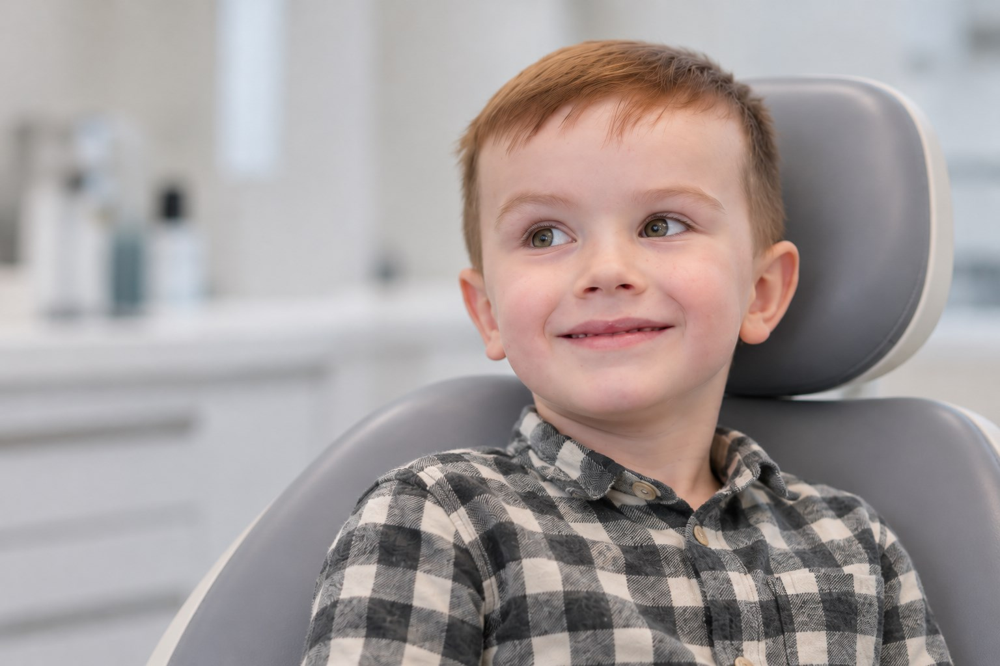
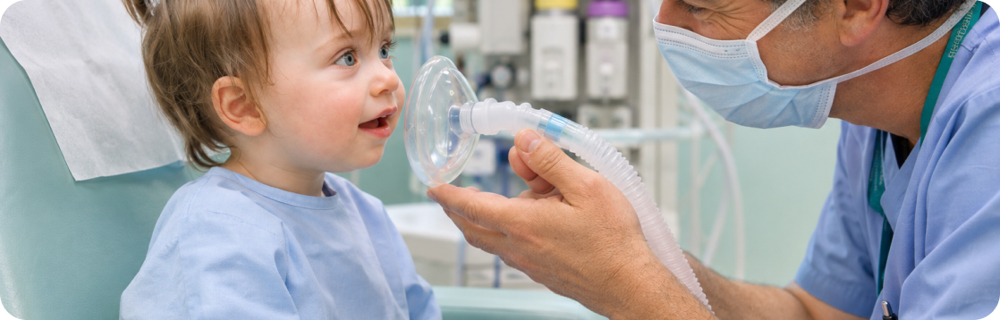

Сизонец Александра
главный врач, терапевт, хирург
опыт: 6 лет

Молочные зубы важно сохранять до их естественной смены. Кариес может быстро развиваться, вызывать боль и мешать ребёнку есть и спать. А преждевременная потеря зуба иногда влияет на положение постоянных зубов.
В «Метелице» мы учитываем возраст и особенности каждого ребёнка: знакомим с инструментами, объясняем происходящее понятными словами и помогаем освоиться в кабинете.
Если вы заметили пятно, потемнение или полость в зубе, не дожидайтесь боли. Запишитесь на осмотр — врач оценит состояние зуба и подскажет, нужно ли лечение.

Первый визит начинаем со знакомства. Показываем кабинет и инструменты, рассказываем, что будем делать, и даём ребёнку время привыкнуть. Родители могут быть рядом.
После осмотра врач обсудит с вами план лечения и обезболивание. Если ребёнку сложно выдержать приём, расскажет о возможных вариантах, в том числе лечении во сне. Решение принимается индивидуально, с учётом состояния здоровья.
Перед визитом не обещайте, что врач ничего не будет делать. Лучше спокойно объясните, что стоматолог посмотрит зубы и поможет о них позаботиться. Любимая игрушка поможет почувствовать себя увереннее.
Если кариес затронул ткани внутри зуба, может потребоваться лечение пульпита. Врач оценит, можно ли сохранить зуб, подберёт метод лечения и объяснит, сколько посещений понадобится. В указанные варианты входит восстановление зуба.
При сколе или значительном разрушении восстанавливаем форму молочного зуба пломбировочным материалом. Для передних зубов также учитываем внешний вид улыбки. На осмотре врач проверит, достаточно ли тканей для надёжного восстановления, и предложит подходящий вариант.
Когда молочный зуб сильно разрушен и пломбы может быть недостаточно, врач может предложить коронку. Она закрывает зуб целиком и помогает защитить его при жевании. Материал подбираем с учётом расположения зуба, его состояния и внешнего вида.
Стоимость зависит от объёма лечения. Точный план и цену врач согласует с вами после осмотра.
главный врач, терапевт, хирург
опыт: 6 лет
терапевт, хирург
опыт: 6 лет
хирург
опыт: 6 лет
терапевт, детский стоматолог
опыт: 6 лет
При седации ребёнок расслаблен, а степень контакта зависит от её глубины и выбранного метода. При общем наркозе ребёнок спит и не реагирует на происходящее. Какой вариант подходит, врач и анестезиолог определяют после оценки здоровья и объёма лечения. Подробнее — на странице лечения во сне.
Начинаем с осмотра. Если нужно уточнить состояние зуба и окружающих тканей, врач назначит снимок по показаниям. Перед лечением под наркозом список обследований и консультаций определяет анестезиолог.
Расскажите ребёнку о визите спокойно и простыми словами. Возьмите любимую игрушку, сообщите врачу об аллергии, заболеваниях и принимаемых лекарствах. Если планируется седация или наркоз, заранее получите у клиники индивидуальные инструкции по подготовке.
Это зависит от состояния зуба и срока его смены. Даже молочный зуб может стать причиной боли и воспаления. После осмотра врач объяснит, можно ли наблюдать зуб или требуется лечение.
Карина рассказала, что ребёнку вылечили зубы за один визит в медикаментозном сне. Семье понравилось, что команда подробно объяснила ход процедуры и помогла ребёнку чувствовать себя спокойно.
Юлия рассказала о лечении зубов дочери под наркозом. Семья оценила, что врач заранее объяснил, как пройдёт визит, и оставался рядом в комнате пробуждения.
Семья обратилась с травмой зубов у ребёнка. Администраторы связались утром, а врач заранее объяснил план лечения. Во время визита родителям рассказывали, как всё проходит.
После первого осмотра семье помогли спланировать лечение во сне. Мария особенно отметила игровую зону и то, что сын сам мог выбрать подарок после приёма.

Познакомимся, посмотрим зубы и вместе составим план лечения.